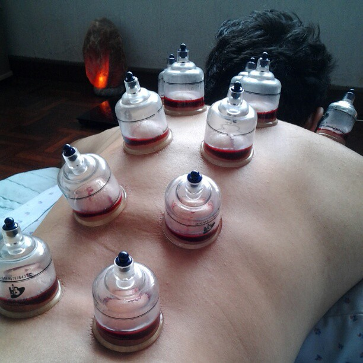

Wet cupping
Wet cupping is the most specialised type of cupping therapy. It is done in addition to fixed cupping to remove toxins directly from the body rather than letting the toxins drain out through the stool and urine. This is the most effective means to detox in most cases. A specially designed surgical blade is used in the process to gently scratch the top layer of skin to allow toxic blood to be released once suction is applied. This special surgical blade is designed to not leave any scars and to minimise pain (you’d be surprised at how little you feel!)
Dry cupping

Dry Cupping is a type of physical treatment, also known as the Hijama Cupping, in which a cup is placed on the skin and a bubble is created to impart negative pressure. This negative pressure boosts blood flow and circulation to the affected region. Dry Cupping can be performed using either a warm cup that generates pressure as it starts to cool or a simple technique comprising a cup and a handoperated pump that produces negative pressure after the cup is attached.
Fire cupping
Fire Cupping is an ancient technique in Traditional Chinese Medicine therapy (TCM). TCM practitioners believe that a person’s chi, or vital energy, gets imbalanced when they are ill, stressed or injured. In Eastern society, it is thought that fire cupping pulls out blockages in the patient’s chi which allows energy to flow more freely and promotes healing. Fire cupping is a form of deep tissue massage that promotes stress relief and relaxation